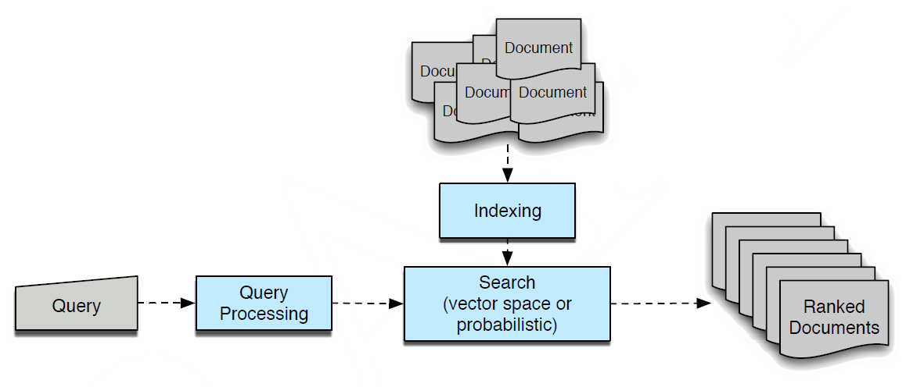

Постановка задачи#
Информационный поиск - поиск такого документа (документов) в базе документов, который наиболее релевантен запросу пользователя.
Задачи информационного поиска воникают в большинстве современных приложений, где есть пользователи. Пример, магазин электронной торговли - поиск товара.
Документом называют наименьший блок информации, с которым работает поиск. Это может быть как физический документ (например, содержимое docx файла), так и просто выделенный кусок текста. Такой кусок текста называют чанком (chunk) или пассажем (passage).
Запрос - некий сформулированный ключ поиска (что ищем). Набор слов, так и вопрос в произвольной форме на естесвенном языке
База документов - доступный набор, допускабщий обращение к документам. Поиском (в узком смысле) называют некое приложение, которое по входу . Простой пример - выгруженый на отдельный сервер набор статей Wikipedia.

Модальность (тип содержимой информации) как документа, так и запроса может быть любой. В большинстве случаев модальность документа и запроса одинакова - это текст. В этом случае говорят о текстовом поиске. Яркий пример текстового поиска - поисковая система Google.
В современных приложениях модальность не обязательно текстовая, это могут быть картинки, видео, аудио, или может быть вообще смешанной (например, в задаче поиска картинок по их текстовому описанию). Такая универсальность легко реализуется за счет того, что в моделях поиска внутренние представления документов (inner embeddings) остаются одинаковыми
Почему задача оформилась в отдельную дисциплину:
объектов много - простое линейное сканирование неэффективно и нужны алгоритмичесие хаки для ускорения процесса
критерии поиска размываются
Обычно непосредственно поиск - это только ядро функционала. В зависимости от того, что дальше необходимо сделать с найдненной информацией вторым шагом, легко выделяется несколько классов решений:
Search
поисковые системы, результат = оригинал документа передается пользователюRecommendations
рекомендации продкутов, результат =Augmented Generation
генеративные модели с доступом к внешней памятиQA системы
Factual answers Тут удобно, что алгоритмы первого этапа (непосредственно поиска, который часто называют просто Retrieval) во всех этих приложениях одинаковы и как правило и не сильно зависят от второго прикладного этапа
Релевантность - понятие градиентное, результат поиска почти всегда - набор докментов, финальный выбор какую информацию использовать за пользователем. Сопровождается задачей ранжирования набора документов
Search and Retrieval usually do not require any substantial post-processing of retrieved documents. Generation does require it (sumamrize, find answers etc), but in most cases rely on the original document => can use standard retrieval
История#
Термин предложил Мур в 1950 (не путать с Муром, который транзисторы), его определение было довольно широким
”Information retrieval = the finding of information whose location or very existence is a priori unknown”
Тогда же он обосновал важность поиска для приложений (закон Мура)
”An information retrieval system will tend not to be used whenever it is more painful and troublesome for a customer to have information than for him not to have it”
Коротко: чтобы поиском пользователись его важно делать простым
Современное определение чуть конкретнее
”Information retrieval = finding material (usually documents) of an unstructured nature (usually text) that satisfies an information need from within large collections (usually stored on computers)”
Формальная постановка#
Арихтекутура современного информационного поиска выглядит примерно так
Выбор конкретных компонент и деталей их взаимодействия и определяет, что перед нами за метод
Настроить поиск значит определить:
что есть “документ”
какую информацию содержит
модальность, размер чанка, пересечениекак эта информация закодирована
токенизация, эмбеддинговое пространство
что есть “релевантность”
метрика пересечения, взвешенность TF-IDF, косинусное расстояние, глубокая сеть и тпкак делать “фильтрацию”
иерархически/одношагово, цикл по документам, какие пороги и тпкак ранжировать домкументы
Enhancements#
User query misspecification#
One of the main challenges in Information Retrieval (known before 1980s) is that users often cannot articulate their needs precisely because they don’t fully understand the problem. IR practitioneers of that time (paper) formulated the following target - a good IR system must be context-dependent, personalized, able to maintain dialogue with user
Examples of poor specification:
Ambiguous Queries / Polysemy
jaguar, apple historySynonymy / Different Vocabulary
heart attack symptomsContextual or Temporal Mismatch
president bushMismatch Due to Domain Jargon
How do I fix my computer’s blue screen?Overspecification (too narrow queries)
best restaurants for vegan ramen in San Francisco open lateUser Under-Specification (too wide queries)
python tutorial
Main takeaway = Retrieval requires some kind of query preprocessing / adjustment. Classic sparse retrievers like TF-IDF / BM25 might not be enough
Обзор подходов#
Sparse Retrieval#
In “Sparse Retrieval” each text document (and the query) is a vocabulary-sized vector (thus can be for example 100K wide). It is the older approach. The query is divided into query tokens, the Retriever lookups all documents from inverted index that tjis token. Docuemnts fetched for each query token ordered and form document lists (called posting lists)
Next the lists are merged together (using AND logic), filtered and transfered for further ranking
Various weighting mechanics (like TF-IDF) are applied to make fetching more accurate and nuanced
Matching algorithms:
TF-IDF
BM25
Dense Retrieval#
Dense Retrievers is a family of algorithms where queries and documents are mapped into the same latent vector-space by some sort of Encoder. Query/document proximity is then calculated by a cosine / dot-product similarity
Dense Extraction can be implemented by either performing a “full-scan” (suitable for small indices) or “approximate fetch” (suitable for large indices but requires additional filtering of the result)
Hybrid Retrieval#
Многие методы находятся где-то посередине между классическими подходами
Пара примеров
созраняется размерность словаря, но вес считается для всех
Hybrid Retrievers use dense encoding as an intermediary representaion, but still use sparse retrieval from inverted index. They tend to take best from two worlds - semantic richness of Dense representation and efficiency of Sparse vectors. Often refered to as neural sparse retrieval.
The output is a sparse vocabulary-sized vector of tokens that constitute the document/query, but instead of deterministic TFs weights we use more expressive, context-dependent weights
Approximate Index#
Retrieving documents from a large database, whether using sparse or dense keys, requires full-scan of this database, which is unsatisfactory for most production-level systems
This means we need to finr a way to accelerate retrieval. Puting hardware accelreration (sharding, caching etc) aside, the best option is to store documents in a manner optimized for fast retireval using proximity-based queries
Most dense retrievers are approximate (at least at the candidate generation phase). Approximate nearest neighbours alogorithms that are worth mentioning include:
k-D trees
FAISS (Meta)
Annoy (Spotify)
we build k decision trees, navigate to analyzed observation in \(log(n)\) and neighbours from the neighbouring nodesScaNN (Google)
HNWS (Yandex)
build a proximity graph, aggregate it several times to make it hierarchical and navigate to find neighbouring obervations
See the notebook for more detailed explanation
Multi-step Retrieval#
Most production-level retireval systems that typically rely on large amounts of data are implemented as an hierarchical multi-stage process. They pick most relevant documents by gradually filtering out irrelevant documents while performing increasingly more complex checks. This approach allows to find sufficient recall/precision balance by leveraging both approximate abd precise models.
Here is typical 2-stage retireval process:
Lightweight selection = fast but low-precision candidate generation
Examples
- sparse matching: fast inverted index scan optionally using tf-idf / bm25 weighting
- approximate dense matching (for moderate size systems): fast approximate algorithms like FAISS, Annoy, HNSW to do \(O(n)\) selectionHeavy model selection = slow but high-precision filtering
EXamples:
- gradient boosting or BERT over feature enriched documents
If no filtering is intended, only ranking, the step is called reranking
Retriever as a Model#
Retrievers can be trainable
Retriver = Embedder + Combiner + Selector = Relevance predictor
Methods:
REALM
colBERT
DPR
RAG
DPR-CTL
S3
Early vs Late Fusion#
В рамках решения задачи Information Retrieval нам нужно сравнить запрос \(Q\) с каждым документом \(D\), то есть смоделировать релевантность $\(\textbf{Rel} \approx F(Q,D)\)$ некоторой функцией двух аргументов. Сама функция F это некий Encoder, либо эвристически подобранный (как в старых sparse подходах), либо нейронка (как в новых dense подходах). А вот дальше надо понять, как именно комибинровать входные аргументы D и Q
Принцип Early fusion: Q и D начинают взаимодействовать как можно раньше, в самом входе: Q просто конкатенируется с D
Принцип Late fusion: представления для Q и D вычисляются отдельно, не влияя друг на друга, а их комбинация считается в последнем слое сети простой операцией (cosine product / dot product)
Другое распространенное название этих подходов:
Cross-Encoder (aka Early Fusion model)
Bi-Encoder or Two-Tower (aka Late Fusion model)
При этом ничего не мешает делать промежуточные варианты, сначала независимые модули кодируют по-отдельности, а затем модеируют уже их взаимодействие
У обоих подходов есть свои плюсы и минусы. Все они находятся вокруг баланса скорости и точности
Плюсы late fusion:
быстрее меньше так как значительно весов
можно закэшировать редко меняющюся ветку (в задаче рекодемеаицй это, например, эмбединг пользователя)
Плюсы early fusion:
точнее
Приложения поиска#
Retrieval for Generation#
First LLM models relied entirely on their own weights. Problem: the knowledge of first ChatGPT was 2 years behind the actual time. To overcome this limitation you had to continuosly retrain the whole model, which is unfeasible.
There came RAG = Retrieval Augmented Generation. Idea: relevant fresh data is attached directly to the LLM context on-the-run (real time)
Classic RAG system:
Retriever component fetches candidate documents (focus on recall)
using query matching
using embedding matching
LLM uses them as a context

Important problem, not only in the domain of LLM generation, but in the IR generally = original query might be not sufficient for accurate retireval
Rocchio (1971)#
Один из первых персонализированных поисков, учитывавший историю предыдущих запросов
Идея: перед поиском ближайших соседей (методом Dense Retrieval) прибавлять к запросному вектору (query embedding) сумму векторов документов, которые пользователь ранее оценивал релевантными
Если запроса нет, получится классическая реализация рекомендательной системы, где новые документы подбираются макстимально близкими к усредненной истории пользователя
Rocchio algorithm defined the first personalized version of document Retrieval. What it does - it shifts query vector (from the document-query vector space) in the direction towards documents previously positively evaluated by this user